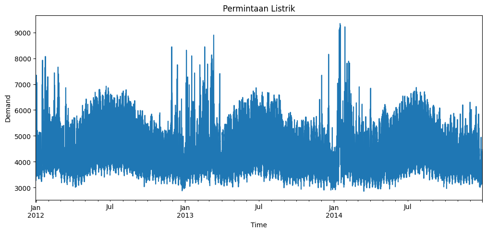
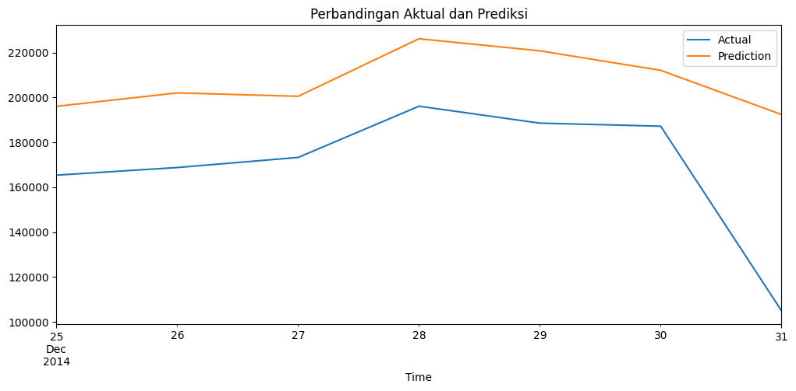
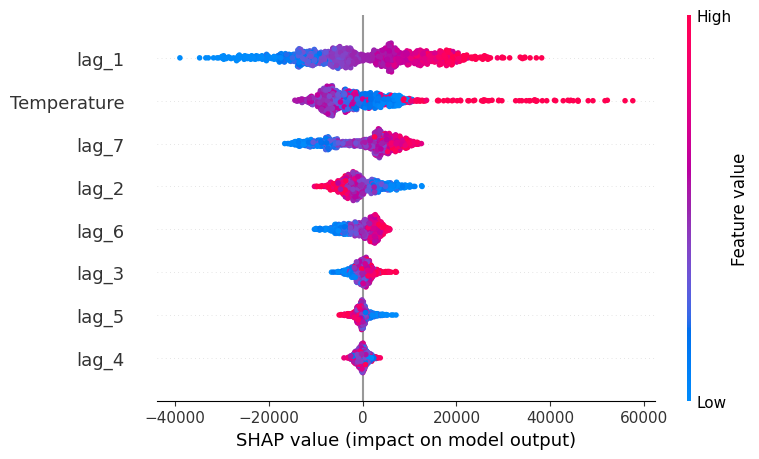

Analisis Explainability pada Prediksi Permintaan Listrik Menggunakan Skforecast#
Tujuan:
Mereproduksi implementasi explainability pada model forecasting menggunakan Skforecast.
Memahami bentuk data training yang digunakan dalam time series forecasting.
Memahami konsep lag dalam forecasting.
Menganalisis faktor-faktor yang mempengaruhi hasil prediksi permintaan listrik menggunakan SHAP.
Explainability pada Forecasting Menggunakan Skforecast#
Explainability pada forecasting merupakan pendekatan yang digunakan untuk memahami bagaimana model machine learning menghasilkan prediksi pada data deret waktu (time series). Dalam implementasinya, library Skforecast dapat digunakan untuk membangun model forecasting dengan memanfaatkan algoritma machine learning, seperti LightGBM, sebagai regressor. Model ini memanfaatkan data historis yang diubah ke dalam bentuk supervised learning menggunakan teknik lag, sehingga nilai pada periode sebelumnya dapat digunakan sebagai fitur untuk memprediksi nilai pada periode berikutnya. Selain itu, variabel eksternal seperti temperatur dapat ditambahkan untuk meningkatkan kemampuan prediksi model.
Salah satu metode yang digunakan untuk meningkatkan interpretabilitas model forecasting adalah SHAP (SHapley Additive exPlanations). SHAP memungkinkan identifikasi kontribusi masing-masing fitur terhadap hasil prediksi yang dihasilkan model. Dengan adanya explainability, pengguna tidak hanya memperoleh informasi mengenai nilai prediksi, tetapi juga dapat memahami faktor-faktor yang memengaruhi keputusan model.
Penerapan explainability pada forecasting menjadi aspek yang penting karena dapat meningkatkan transparansi, kemudahan interpretasi, serta kepercayaan terhadap model machine learning. Hal ini sangat bermanfaat dalam mendukung pengambilan keputusan yang didasarkan pada hasil prediksi, terutama ketika model yang digunakan memiliki kompleksitas yang tinggi.
Informasi Dataset vic_electricity#
Aspek |
Keterangan |
|---|---|
Nama Dataset |
|
Sumber Dataset |
Library Skforecast ( |
Dokumentasi Acuan |
Skforecast Explainability User Guide versi 0.15.1 |
Jenis Data |
Time Series (Deret Waktu) |
Domain Data |
Energi / Kelistrikan |
Lokasi Pengamatan |
Victoria, Australia |
Tujuan Analisis |
Memprediksi permintaan listrik pada periode mendatang |
Variabel Target |
|
Variabel Eksogen |
|
Frekuensi Data Awal |
Data interval waktu tertentu (sesuai dataset asli) |
Frekuensi Setelah Preprocessing |
Harian (Daily) |
Metode Preprocessing |
Resampling data menggunakan agregasi harian |
Metode Forecasting |
Recursive Forecasting menggunakan Skforecast |
Algoritma Regresi |
LightGBM ( |
Jumlah Lag yang Digunakan |
7 lag (7 hari sebelumnya) |
Metode Explainability |
SHAP (SHapley Additive exPlanations) |
Tujuan Explainability |
Mengetahui pengaruh masing-masing fitur terhadap hasil prediksi |
Output Model |
Prediksi permintaan listrik ( |
Manfaat Hasil Prediksi |
Membantu perencanaan kapasitas listrik, distribusi energi, dan pengambilan keputusan operasional |
Deskripsi Variabel Dataset vic_electricity#
Variabel |
Tipe Data |
Deskripsi |
|---|---|---|
|
Numerik (Float) |
Menunjukkan jumlah permintaan atau konsumsi listrik pada suatu periode waktu tertentu. Variabel ini menjadi target utama yang akan diprediksi oleh model forecasting. |
|
Numerik (Float) |
Menunjukkan temperatur atau suhu udara pada periode waktu tertentu. Digunakan sebagai variabel eksogen karena suhu dapat memengaruhi tingkat konsumsi listrik masyarakat. |
|
Datetime |
Menunjukkan informasi waktu pengamatan data secara kronologis. Digunakan untuk mempertahankan urutan data dalam analisis time series. |
1. Install Library#
Library yang digunakan:
Library |
Fungsi |
|---|---|
|
Membuat model forecasting time series |
|
Algoritma machine learning yang digunakan |
|
Explainability model |
|
Pengolahan data |
|
Visualisasi data |
!pip install skforecast==0.15.1
!pip install shap
!pip install lightgbm
Collecting skforecast==0.15.1
Downloading skforecast-0.15.1-py3-none-any.whl.metadata (17 kB)
Requirement already satisfied: numpy>=1.24 in /usr/local/python/3.12.1/lib/python3.12/site-packages (from skforecast==0.15.1) (2.4.6)
Requirement already satisfied: pandas>=1.5 in /usr/local/python/3.12.1/lib/python3.12/site-packages (from skforecast==0.15.1) (2.3.3)
Collecting tqdm>=4.57 (from skforecast==0.15.1)
Downloading tqdm-4.68.2-py3-none-any.whl.metadata (58 kB)
Collecting scikit-learn>=1.2 (from skforecast==0.15.1)
Downloading scikit_learn-1.9.0-cp312-cp312-manylinux_2_27_x86_64.manylinux_2_28_x86_64.whl.metadata (11 kB)
Collecting optuna>=2.10 (from skforecast==0.15.1)
Downloading optuna-4.9.0-py3-none-any.whl.metadata (15 kB)
Collecting joblib>=1.1 (from skforecast==0.15.1)
Downloading joblib-1.5.3-py3-none-any.whl.metadata (5.5 kB)
Collecting numba>=0.59 (from skforecast==0.15.1)
Downloading numba-0.65.1-cp312-cp312-manylinux2014_x86_64.manylinux_2_17_x86_64.whl.metadata (2.9 kB)
Collecting rich>=13.9 (from skforecast==0.15.1)
Downloading rich-15.0.0-py3-none-any.whl.metadata (18 kB)
Collecting llvmlite<0.48,>=0.47.0dev0 (from numba>=0.59->skforecast==0.15.1)
Downloading llvmlite-0.47.0-cp312-cp312-manylinux2014_x86_64.manylinux_2_17_x86_64.whl.metadata (5.0 kB)
Collecting alembic>=1.5.0 (from optuna>=2.10->skforecast==0.15.1)
Downloading alembic-1.18.4-py3-none-any.whl.metadata (7.2 kB)
Collecting colorlog (from optuna>=2.10->skforecast==0.15.1)
Downloading colorlog-6.10.1-py3-none-any.whl.metadata (11 kB)
Requirement already satisfied: packaging>=20.0 in /home/codespace/.local/lib/python3.12/site-packages (from optuna>=2.10->skforecast==0.15.1) (25.0)
Requirement already satisfied: sqlalchemy>=1.4.2 in /usr/local/python/3.12.1/lib/python3.12/site-packages (from optuna>=2.10->skforecast==0.15.1) (2.0.46)
Requirement already satisfied: PyYAML in /home/codespace/.local/lib/python3.12/site-packages (from optuna>=2.10->skforecast==0.15.1) (6.0.3)
Collecting Mako (from alembic>=1.5.0->optuna>=2.10->skforecast==0.15.1)
Downloading mako-1.3.12-py3-none-any.whl.metadata (2.9 kB)
Requirement already satisfied: typing-extensions>=4.12 in /home/codespace/.local/lib/python3.12/site-packages (from alembic>=1.5.0->optuna>=2.10->skforecast==0.15.1) (4.15.0)
Requirement already satisfied: python-dateutil>=2.8.2 in /home/codespace/.local/lib/python3.12/site-packages (from pandas>=1.5->skforecast==0.15.1) (2.9.0.post0)
Requirement already satisfied: pytz>=2020.1 in /usr/local/python/3.12.1/lib/python3.12/site-packages (from pandas>=1.5->skforecast==0.15.1) (2026.2)
Requirement already satisfied: tzdata>=2022.7 in /home/codespace/.local/lib/python3.12/site-packages (from pandas>=1.5->skforecast==0.15.1) (2025.2)
Requirement already satisfied: six>=1.5 in /home/codespace/.local/lib/python3.12/site-packages (from python-dateutil>=2.8.2->pandas>=1.5->skforecast==0.15.1) (1.17.0)
Requirement already satisfied: markdown-it-py>=2.2.0 in /usr/local/python/3.12.1/lib/python3.12/site-packages (from rich>=13.9->skforecast==0.15.1) (3.0.0)
Requirement already satisfied: pygments<3.0.0,>=2.13.0 in /home/codespace/.local/lib/python3.12/site-packages (from rich>=13.9->skforecast==0.15.1) (2.19.2)
Requirement already satisfied: mdurl~=0.1 in /usr/local/python/3.12.1/lib/python3.12/site-packages (from markdown-it-py>=2.2.0->rich>=13.9->skforecast==0.15.1) (0.1.2)
Collecting scipy>=1.10.0 (from scikit-learn>=1.2->skforecast==0.15.1)
Downloading scipy-1.17.1-cp312-cp312-manylinux_2_27_x86_64.manylinux_2_28_x86_64.whl.metadata (62 kB)
Collecting narwhals>=2.0.1 (from scikit-learn>=1.2->skforecast==0.15.1)
Downloading narwhals-2.22.1-py3-none-any.whl.metadata (15 kB)
Collecting threadpoolctl>=3.5.0 (from scikit-learn>=1.2->skforecast==0.15.1)
Downloading threadpoolctl-3.6.0-py3-none-any.whl.metadata (13 kB)
Requirement already satisfied: greenlet>=1 in /usr/local/python/3.12.1/lib/python3.12/site-packages (from sqlalchemy>=1.4.2->optuna>=2.10->skforecast==0.15.1) (3.3.1)
Requirement already satisfied: MarkupSafe>=0.9.2 in /home/codespace/.local/lib/python3.12/site-packages (from Mako->alembic>=1.5.0->optuna>=2.10->skforecast==0.15.1) (3.0.3)
Downloading skforecast-0.15.1-py3-none-any.whl (812 kB)
?25l ━━━━━━━━━━━━━━━━━━━━━━━━━━━━━━━━━━━━━━━━ 0.0/812.8 kB ? eta -:--:--
━━━━━━━━━━━━━━━━━━━━━━━━━━━━━━━━━━━━━━━━ 812.8/812.8 kB 23.3 MB/s 0:00:00
?25hDownloading joblib-1.5.3-py3-none-any.whl (309 kB)
Downloading numba-0.65.1-cp312-cp312-manylinux2014_x86_64.manylinux_2_17_x86_64.whl (3.8 MB)
?25l ━━━━━━━━━━━━━━━━━━━━━━━━━━━━━━━━━━━━━━━━ 0.0/3.8 MB ? eta -:--:--
━━━━━━━━━━━━━━━━━━━━━━━━━━━━━━━━━━━━━━━━ 3.8/3.8 MB 27.0 MB/s 0:00:00
?25hDownloading llvmlite-0.47.0-cp312-cp312-manylinux2014_x86_64.manylinux_2_17_x86_64.whl (56.3 MB)
?25l
━━━━━━━━━━━━━━━━━━━━━━━━━━━━━━━━━━━━━━━━ 0.0/56.3 MB ? eta -:--:--
━━━━━━━━━━━━━━━━━━━━━━━━╺━━━━━━━━━━━━━━━ 34.3/56.3 MB 171.4 MB/s eta 0:00:01
━━━━━━━━━━━━━━━━━━━━━━━━━━━━━━━━━━━━━━━╸ 56.1/56.3 MB 191.3 MB/s eta 0:00:01
━━━━━━━━━━━━━━━━━━━━━━━━━━━━━━━━━━━━━━━╸ 56.1/56.3 MB 191.3 MB/s eta 0:00:01
━━━━━━━━━━━━━━━━━━━━━━━━━━━━━━━━━━━━━━━╸ 56.1/56.3 MB 191.3 MB/s eta 0:00:01
━━━━━━━━━━━━━━━━━━━━━━━━━━━━━━━━━━━━━━━╸ 56.1/56.3 MB 191.3 MB/s eta 0:00:01
━━━━━━━━━━━━━━━━━━━━━━━━━━━━━━━━━━━━━━━╸ 56.1/56.3 MB 191.3 MB/s eta 0:00:01
━━━━━━━━━━━━━━━━━━━━━━━━━━━━━━━━━━━━━━━━ 56.3/56.3 MB 43.4 MB/s 0:00:01
?25h
Downloading optuna-4.9.0-py3-none-any.whl (425 kB)
Downloading alembic-1.18.4-py3-none-any.whl (263 kB)
Downloading rich-15.0.0-py3-none-any.whl (310 kB)
Downloading scikit_learn-1.9.0-cp312-cp312-manylinux_2_27_x86_64.manylinux_2_28_x86_64.whl (9.1 MB)
?25l ━━━━━━━━━━━━━━━━━━━━━━━━━━━━━━━━━━━━━━━━ 0.0/9.1 MB ? eta -:--:--
━━━━━━━━━━━━━━━━━━━━━━━━━━━━━━━━━━━━━━━╺ 8.9/9.1 MB 146.3 MB/s eta 0:00:01
━━━━━━━━━━━━━━━━━━━━━━━━━━━━━━━━━━━━━━━━ 9.1/9.1 MB 41.9 MB/s 0:00:00
?25hDownloading narwhals-2.22.1-py3-none-any.whl (454 kB)
Downloading scipy-1.17.1-cp312-cp312-manylinux_2_27_x86_64.manylinux_2_28_x86_64.whl (35.2 MB)
?25l ━━━━━━━━━━━━━━━━━━━━━━━━━━━━━━━━━━━━━━━━ 0.0/35.2 MB ? eta -:--:--
━━━━━━━━━━━━━━━━━━━━━━━━━━━━━━━━━━━━━━━╸ 35.1/35.2 MB 176.6 MB/s eta 0:00:01
━━━━━━━━━━━━━━━━━━━━━━━━━━━━━━━━━━━━━━━╸ 35.1/35.2 MB 176.6 MB/s eta 0:00:01
━━━━━━━━━━━━━━━━━━━━━━━━━━━━━━━━━━━━━━━╸ 35.1/35.2 MB 176.6 MB/s eta 0:00:01
━━━━━━━━━━━━━━━━━━━━━━━━━━━━━━━━━━━━━━━╸ 35.1/35.2 MB 176.6 MB/s eta 0:00:01
━━━━━━━━━━━━━━━━━━━━━━━━━━━━━━━━━━━━━━━━ 35.2/35.2 MB 43.1 MB/s 0:00:00
?25hDownloading threadpoolctl-3.6.0-py3-none-any.whl (18 kB)
Downloading tqdm-4.68.2-py3-none-any.whl (78 kB)
Downloading colorlog-6.10.1-py3-none-any.whl (11 kB)
Downloading mako-1.3.12-py3-none-any.whl (78 kB)
Installing collected packages: tqdm, threadpoolctl, scipy, narwhals, Mako, llvmlite, joblib, colorlog, scikit-learn, rich, numba, alembic, optuna, skforecast
?25l
━━━━━━━━━━━━━━━━━━━━━━━━━━━━━━━━━━━━━━━━ 0/14 [tqdm]
━━━━━╸━━━━━━━━━━━━━━━━━━━━━━━━━━━━━━━━━━ 2/14 [scipy]
━━━━━╸━━━━━━━━━━━━━━━━━━━━━━━━━━━━━━━━━━ 2/14 [scipy]
━━━━━╸━━━━━━━━━━━━━━━━━━━━━━━━━━━━━━━━━━ 2/14 [scipy]
━━━━━╸━━━━━━━━━━━━━━━━━━━━━━━━━━━━━━━━━━ 2/14 [scipy]
━━━━━╸━━━━━━━━━━━━━━━━━━━━━━━━━━━━━━━━━━ 2/14 [scipy]
━━━━━╸━━━━━━━━━━━━━━━━━━━━━━━━━━━━━━━━━━ 2/14 [scipy]
━━━━━╸━━━━━━━━━━━━━━━━━━━━━━━━━━━━━━━━━━ 2/14 [scipy]
━━━━━╸━━━━━━━━━━━━━━━━━━━━━━━━━━━━━━━━━━ 2/14 [scipy]
━━━━━╸━━━━━━━━━━━━━━━━━━━━━━━━━━━━━━━━━━ 2/14 [scipy]
━━━━━╸━━━━━━━━━━━━━━━━━━━━━━━━━━━━━━━━━━ 2/14 [scipy]
━━━━━╸━━━━━━━━━━━━━━━━━━━━━━━━━━━━━━━━━━ 2/14 [scipy]
━━━━━╸━━━━━━━━━━━━━━━━━━━━━━━━━━━━━━━━━━ 2/14 [scipy]
━━━━━╸━━━━━━━━━━━━━━━━━━━━━━━━━━━━━━━━━━ 2/14 [scipy]
━━━━━╸━━━━━━━━━━━━━━━━━━━━━━━━━━━━━━━━━━ 2/14 [scipy]
━━━━━╸━━━━━━━━━━━━━━━━━━━━━━━━━━━━━━━━━━ 2/14 [scipy]
━━━━━╸━━━━━━━━━━━━━━━━━━━━━━━━━━━━━━━━━━ 2/14 [scipy]
━━━━━╸━━━━━━━━━━━━━━━━━━━━━━━━━━━━━━━━━━ 2/14 [scipy]
━━━━━╸━━━━━━━━━━━━━━━━━━━━━━━━━━━━━━━━━━ 2/14 [scipy]
━━━━━╸━━━━━━━━━━━━━━━━━━━━━━━━━━━━━━━━━━ 2/14 [scipy]
━━━━━╸━━━━━━━━━━━━━━━━━━━━━━━━━━━━━━━━━━ 2/14 [scipy]
━━━━━╸━━━━━━━━━━━━━━━━━━━━━━━━━━━━━━━━━━ 2/14 [scipy]
━━━━━╸━━━━━━━━━━━━━━━━━━━━━━━━━━━━━━━━━━ 2/14 [scipy]
━━━━━╸━━━━━━━━━━━━━━━━━━━━━━━━━━━━━━━━━━ 2/14 [scipy]
━━━━━╸━━━━━━━━━━━━━━━━━━━━━━━━━━━━━━━━━━ 2/14 [scipy]
━━━━━╸━━━━━━━━━━━━━━━━━━━━━━━━━━━━━━━━━━ 2/14 [scipy]
━━━━━╸━━━━━━━━━━━━━━━━━━━━━━━━━━━━━━━━━━ 2/14 [scipy]
━━━━━╸━━━━━━━━━━━━━━━━━━━━━━━━━━━━━━━━━━ 2/14 [scipy]
━━━━━╸━━━━━━━━━━━━━━━━━━━━━━━━━━━━━━━━━━ 2/14 [scipy]
━━━━━━━━╸━━━━━━━━━━━━━━━━━━━━━━━━━━━━━━━ 3/14 [narwhals]
━━━━━━━━╸━━━━━━━━━━━━━━━━━━━━━━━━━━━━━━━ 3/14 [narwhals]
━━━━━━━━━━━╺━━━━━━━━━━━━━━━━━━━━━━━━━━━━ 4/14 [Mako]
━━━━━━━━━━━━━━╺━━━━━━━━━━━━━━━━━━━━━━━━━ 5/14 [llvmlite]
━━━━━━━━━━━━━━╺━━━━━━━━━━━━━━━━━━━━━━━━━ 5/14 [llvmlite]
━━━━━━━━━━━━━━╺━━━━━━━━━━━━━━━━━━━━━━━━━ 5/14 [llvmlite]
━━━━━━━━━━━━━━╺━━━━━━━━━━━━━━━━━━━━━━━━━ 5/14 [llvmlite]
━━━━━━━━━━━━━━╺━━━━━━━━━━━━━━━━━━━━━━━━━ 5/14 [llvmlite]
━━━━━━━━━━━━━━╺━━━━━━━━━━━━━━━━━━━━━━━━━ 5/14 [llvmlite]
━━━━━━━━━━━━━━╺━━━━━━━━━━━━━━━━━━━━━━━━━ 5/14 [llvmlite]
━━━━━━━━━━━━━━╺━━━━━━━━━━━━━━━━━━━━━━━━━ 5/14 [llvmlite]
━━━━━━━━━━━━━━╺━━━━━━━━━━━━━━━━━━━━━━━━━ 5/14 [llvmlite]
━━━━━━━━━━━━━━╺━━━━━━━━━━━━━━━━━━━━━━━━━ 5/14 [llvmlite]
━━━━━━━━━━━━━━╺━━━━━━━━━━━━━━━━━━━━━━━━━ 5/14 [llvmlite]
━━━━━━━━━━━━━━╺━━━━━━━━━━━━━━━━━━━━━━━━━ 5/14 [llvmlite]
━━━━━━━━━━━━━━╺━━━━━━━━━━━━━━━━━━━━━━━━━ 5/14 [llvmlite]
━━━━━━━━━━━━━━╺━━━━━━━━━━━━━━━━━━━━━━━━━ 5/14 [llvmlite]
━━━━━━━━━━━━━━╺━━━━━━━━━━━━━━━━━━━━━━━━━ 5/14 [llvmlite]
━━━━━━━━━━━━━━━━━╺━━━━━━━━━━━━━━━━━━━━━━ 6/14 [joblib]
━━━━━━━━━━━━━━━━━╺━━━━━━━━━━━━━━━━━━━━━━ 6/14 [joblib]
━━━━━━━━━━━━━━━━━━━━━━╸━━━━━━━━━━━━━━━━━ 8/14 [scikit-learn]
━━━━━━━━━━━━━━━━━━━━━━╸━━━━━━━━━━━━━━━━━ 8/14 [scikit-learn]
━━━━━━━━━━━━━━━━━━━━━━╸━━━━━━━━━━━━━━━━━ 8/14 [scikit-learn]
━━━━━━━━━━━━━━━━━━━━━━╸━━━━━━━━━━━━━━━━━ 8/14 [scikit-learn]
━━━━━━━━━━━━━━━━━━━━━━╸━━━━━━━━━━━━━━━━━ 8/14 [scikit-learn]
━━━━━━━━━━━━━━━━━━━━━━╸━━━━━━━━━━━━━━━━━ 8/14 [scikit-learn]
━━━━━━━━━━━━━━━━━━━━━━╸━━━━━━━━━━━━━━━━━ 8/14 [scikit-learn]
━━━━━━━━━━━━━━━━━━━━━━╸━━━━━━━━━━━━━━━━━ 8/14 [scikit-learn]
━━━━━━━━━━━━━━━━━━━━━━╸━━━━━━━━━━━━━━━━━ 8/14 [scikit-learn]
━━━━━━━━━━━━━━━━━━━━━━╸━━━━━━━━━━━━━━━━━ 8/14 [scikit-learn]
━━━━━━━━━━━━━━━━━━━━━━╸━━━━━━━━━━━━━━━━━ 8/14 [scikit-learn]
━━━━━━━━━━━━━━━━━━━━━━╸━━━━━━━━━━━━━━━━━ 8/14 [scikit-learn]
━━━━━━━━━━━━━━━━━━━━━━╸━━━━━━━━━━━━━━━━━ 8/14 [scikit-learn]
━━━━━━━━━━━━━━━━━━━━━━╸━━━━━━━━━━━━━━━━━ 8/14 [scikit-learn]
━━━━━━━━━━━━━━━━━━━━━━╸━━━━━━━━━━━━━━━━━ 8/14 [scikit-learn]
━━━━━━━━━━━━━━━━━━━━━━╸━━━━━━━━━━━━━━━━━ 8/14 [scikit-learn]
━━━━━━━━━━━━━━━━━━━━━━━━━╸━━━━━━━━━━━━━━ 9/14 [rich]
━━━━━━━━━━━━━━━━━━━━━━━━━╸━━━━━━━━━━━━━━ 9/14 [rich]
━━━━━━━━━━━━━━━━━━━━━━━━━━━━╸━━━━━━━━━━━ 10/14 [numba]
━━━━━━━━━━━━━━━━━━━━━━━━━━━━╸━━━━━━━━━━━ 10/14 [numba]
━━━━━━━━━━━━━━━━━━━━━━━━━━━━╸━━━━━━━━━━━ 10/14 [numba]
━━━━━━━━━━━━━━━━━━━━━━━━━━━━╸━━━━━━━━━━━ 10/14 [numba]
━━━━━━━━━━━━━━━━━━━━━━━━━━━━╸━━━━━━━━━━━ 10/14 [numba]
━━━━━━━━━━━━━━━━━━━━━━━━━━━━╸━━━━━━━━━━━ 10/14 [numba]
━━━━━━━━━━━━━━━━━━━━━━━━━━━━╸━━━━━━━━━━━ 10/14 [numba]
━━━━━━━━━━━━━━━━━━━━━━━━━━━━╸━━━━━━━━━━━ 10/14 [numba]
━━━━━━━━━━━━━━━━━━━━━━━━━━━━╸━━━━━━━━━━━ 10/14 [numba]
━━━━━━━━━━━━━━━━━━━━━━━━━━━━╸━━━━━━━━━━━ 10/14 [numba]
━━━━━━━━━━━━━━━━━━━━━━━━━━━━╸━━━━━━━━━━━ 10/14 [numba]
━━━━━━━━━━━━━━━━━━━━━━━━━━━━╸━━━━━━━━━━━ 10/14 [numba]
━━━━━━━━━━━━━━━━━━━━━━━━━━━━╸━━━━━━━━━━━ 10/14 [numba]
━━━━━━━━━━━━━━━━━━━━━━━━━━━━╸━━━━━━━━━━━ 10/14 [numba]
━━━━━━━━━━━━━━━━━━━━━━━━━━━━╸━━━━━━━━━━━ 10/14 [numba]
━━━━━━━━━━━━━━━━━━━━━━━━━━━━╸━━━━━━━━━━━ 10/14 [numba]
━━━━━━━━━━━━━━━━━━━━━━━━━━━━╸━━━━━━━━━━━ 10/14 [numba]
━━━━━━━━━━━━━━━━━━━━━━━━━━━━╸━━━━━━━━━━━ 10/14 [numba]
━━━━━━━━━━━━━━━━━━━━━━━━━━━━╸━━━━━━━━━━━ 10/14 [numba]
━━━━━━━━━━━━━━━━━━━━━━━━━━━━╸━━━━━━━━━━━ 10/14 [numba]
━━━━━━━━━━━━━━━━━━━━━━━━━━━━╸━━━━━━━━━━━ 10/14 [numba]
━━━━━━━━━━━━━━━━━━━━━━━━━━━━╸━━━━━━━━━━━ 10/14 [numba]
━━━━━━━━━━━━━━━━━━━━━━━━━━━━╸━━━━━━━━━━━ 10/14 [numba]
━━━━━━━━━━━━━━━━━━━━━━━━━━━━╸━━━━━━━━━━━ 10/14 [numba]
━━━━━━━━━━━━━━━━━━━━━━━━━━━━╸━━━━━━━━━━━ 10/14 [numba]
━━━━━━━━━━━━━━━━━━━━━━━━━━━━╸━━━━━━━━━━━ 10/14 [numba]
━━━━━━━━━━━━━━━━━━━━━━━━━━━━╸━━━━━━━━━━━ 10/14 [numba]
━━━━━━━━━━━━━━━━━━━━━━━━━━━━╸━━━━━━━━━━━ 10/14 [numba]
━━━━━━━━━━━━━━━━━━━━━━━━━━━━╸━━━━━━━━━━━ 10/14 [numba]
━━━━━━━━━━━━━━━━━━━━━━━━━━━━╸━━━━━━━━━━━ 10/14 [numba]
━━━━━━━━━━━━━━━━━━━━━━━━━━━━╸━━━━━━━━━━━ 10/14 [numba]
━━━━━━━━━━━━━━━━━━━━━━━━━━━━╸━━━━━━━━━━━ 10/14 [numba]
━━━━━━━━━━━━━━━━━━━━━━━━━━━━╸━━━━━━━━━━━ 10/14 [numba]
━━━━━━━━━━━━━━━━━━━━━━━━━━━━╸━━━━━━━━━━━ 10/14 [numba]
━━━━━━━━━━━━━━━━━━━━━━━━━━━━╸━━━━━━━━━━━ 10/14 [numba]
━━━━━━━━━━━━━━━━━━━━━━━━━━━━╸━━━━━━━━━━━ 10/14 [numba]
━━━━━━━━━━━━━━━━━━━━━━━━━━━━╸━━━━━━━━━━━ 10/14 [numba]
━━━━━━━━━━━━━━━━━━━━━━━━━━━━━━━╺━━━━━━━━ 11/14 [alembic]
━━━━━━━━━━━━━━━━━━━━━━━━━━━━━━━━━━╺━━━━━ 12/14 [optuna]
━━━━━━━━━━━━━━━━━━━━━━━━━━━━━━━━━━╺━━━━━ 12/14 [optuna]
━━━━━━━━━━━━━━━━━━━━━━━━━━━━━━━━━━╺━━━━━ 12/14 [optuna]
━━━━━━━━━━━━━━━━━━━━━━━━━━━━━━━━━━╺━━━━━ 12/14 [optuna]
━━━━━━━━━━━━━━━━━━━━━━━━━━━━━━━━━━╺━━━━━ 12/14 [optuna]
━━━━━━━━━━━━━━━━━━━━━━━━━━━━━━━━━━╺━━━━━ 12/14 [optuna]
━━━━━━━━━━━━━━━━━━━━━━━━━━━━━━━━━━╺━━━━━ 12/14 [optuna]
━━━━━━━━━━━━━━━━━━━━━━━━━━━━━━━━━━━━━╺━━ 13/14 [skforecast]
━━━━━━━━━━━━━━━━━━━━━━━━━━━━━━━━━━━━━╺━━ 13/14 [skforecast]
━━━━━━━━━━━━━━━━━━━━━━━━━━━━━━━━━━━━━╺━━ 13/14 [skforecast]
━━━━━━━━━━━━━━━━━━━━━━━━━━━━━━━━━━━━━╺━━ 13/14 [skforecast]
━━━━━━━━━━━━━━━━━━━━━━━━━━━━━━━━━━━━━╺━━ 13/14 [skforecast]
━━━━━━━━━━━━━━━━━━━━━━━━━━━━━━━━━━━━━━━━ 14/14 [skforecast]
?25h
Successfully installed Mako-1.3.12 alembic-1.18.4 colorlog-6.10.1 joblib-1.5.3 llvmlite-0.47.0 narwhals-2.22.1 numba-0.65.1 optuna-4.9.0 rich-15.0.0 scikit-learn-1.9.0 scipy-1.17.1 skforecast-0.15.1 threadpoolctl-3.6.0 tqdm-4.68.2
[notice] A new release of pip is available: 25.3 -> 26.1.2
[notice] To update, run: python3 -m pip install --upgrade pip
Collecting shap
Downloading shap-0.52.0-cp312-abi3-manylinux_2_24_x86_64.manylinux_2_28_x86_64.whl.metadata (26 kB)
Requirement already satisfied: numpy>=2 in /usr/local/python/3.12.1/lib/python3.12/site-packages (from shap) (2.4.6)
Requirement already satisfied: scipy in /usr/local/python/3.12.1/lib/python3.12/site-packages (from shap) (1.17.1)
Requirement already satisfied: scikit-learn in /usr/local/python/3.12.1/lib/python3.12/site-packages (from shap) (1.9.0)
Requirement already satisfied: pandas in /usr/local/python/3.12.1/lib/python3.12/site-packages (from shap) (2.3.3)
Requirement already satisfied: tqdm>=4.27.0 in /usr/local/python/3.12.1/lib/python3.12/site-packages (from shap) (4.68.2)
Requirement already satisfied: packaging>20.9 in /home/codespace/.local/lib/python3.12/site-packages (from shap) (25.0)
Collecting slicer==0.0.8 (from shap)
Downloading slicer-0.0.8-py3-none-any.whl.metadata (4.0 kB)
Requirement already satisfied: numba in /usr/local/python/3.12.1/lib/python3.12/site-packages (from shap) (0.65.1)
Requirement already satisfied: llvmlite in /usr/local/python/3.12.1/lib/python3.12/site-packages (from shap) (0.47.0)
Collecting cloudpickle (from shap)
Downloading cloudpickle-3.1.2-py3-none-any.whl.metadata (7.1 kB)
Requirement already satisfied: python-dateutil>=2.8.2 in /home/codespace/.local/lib/python3.12/site-packages (from pandas->shap) (2.9.0.post0)
Requirement already satisfied: pytz>=2020.1 in /usr/local/python/3.12.1/lib/python3.12/site-packages (from pandas->shap) (2026.2)
Requirement already satisfied: tzdata>=2022.7 in /home/codespace/.local/lib/python3.12/site-packages (from pandas->shap) (2025.2)
Requirement already satisfied: six>=1.5 in /home/codespace/.local/lib/python3.12/site-packages (from python-dateutil>=2.8.2->pandas->shap) (1.17.0)
Requirement already satisfied: joblib>=1.4.0 in /usr/local/python/3.12.1/lib/python3.12/site-packages (from scikit-learn->shap) (1.5.3)
Requirement already satisfied: narwhals>=2.0.1 in /usr/local/python/3.12.1/lib/python3.12/site-packages (from scikit-learn->shap) (2.22.1)
Requirement already satisfied: threadpoolctl>=3.5.0 in /usr/local/python/3.12.1/lib/python3.12/site-packages (from scikit-learn->shap) (3.6.0)
Downloading shap-0.52.0-cp312-abi3-manylinux_2_24_x86_64.manylinux_2_28_x86_64.whl (498 kB)
Downloading slicer-0.0.8-py3-none-any.whl (15 kB)
Downloading cloudpickle-3.1.2-py3-none-any.whl (22 kB)
Installing collected packages: slicer, cloudpickle, shap
?25l
━━━━━━━━━━━━━━━━━━━━━━━━━━╸━━━━━━━━━━━━━ 2/3 [shap]
━━━━━━━━━━━━━━━━━━━━━━━━━━━━━━━━━━━━━━━━ 3/3 [shap]
?25h
Successfully installed cloudpickle-3.1.2 shap-0.52.0 slicer-0.0.8
[notice] A new release of pip is available: 25.3 -> 26.1.2
[notice] To update, run: python3 -m pip install --upgrade pip
Collecting lightgbm
Downloading lightgbm-4.6.0-py3-none-manylinux_2_28_x86_64.whl.metadata (17 kB)
Requirement already satisfied: numpy>=1.17.0 in /usr/local/python/3.12.1/lib/python3.12/site-packages (from lightgbm) (2.4.6)
Requirement already satisfied: scipy in /usr/local/python/3.12.1/lib/python3.12/site-packages (from lightgbm) (1.17.1)
Downloading lightgbm-4.6.0-py3-none-manylinux_2_28_x86_64.whl (3.6 MB)
?25l ━━━━━━━━━━━━━━━━━━━━━━━━━━━━━━━━━━━━━━━━ 0.0/3.6 MB ? eta -:--:--
━━━━━━━━━━━━━━━━━━━━━━━━━━━━━━━━━━━━━━━━ 3.6/3.6 MB 35.5 MB/s 0:00:00
?25h
Installing collected packages: lightgbm
^C
2. Import Library#
import numpy as np
import pandas as pd
import matplotlib.pyplot as plt
from lightgbm import LGBMRegressor
from skforecast.recursive import ForecasterRecursive
from skforecast.datasets import fetch_dataset
import shap
3. Mengambil Dataset#
Dataset vic_electricity merupakan data permintaan listrik di wilayah Victoria, Australia.
Dataset ini memiliki beberapa variabel seperti:
Demand → jumlah permintaan listrik.
Temperature → temperatur udara.
Holiday → indikator hari libur.
data = fetch_dataset(name='vic_electricity')
data.head()
vic_electricity
---------------
Half-hourly electricity demand for Victoria, Australia
O'Hara-Wild M, Hyndman R, Wang E, Godahewa R (2022).tsibbledata: Diverse
Datasets for 'tsibble'. https://tsibbledata.tidyverts.org/,
https://github.com/tidyverts/tsibbledata/.
https://tsibbledata.tidyverts.org/reference/vic_elec.html
Shape of the dataset: (52608, 4)
| Demand | Temperature | Date | Holiday | |
|---|---|---|---|---|
| Time | ||||
| 2011-12-31 13:00:00 | 4382.825174 | 21.40 | 2012-01-01 | True |
| 2011-12-31 13:30:00 | 4263.365526 | 21.05 | 2012-01-01 | True |
| 2011-12-31 14:00:00 | 4048.966046 | 20.70 | 2012-01-01 | True |
| 2011-12-31 14:30:00 | 3877.563330 | 20.55 | 2012-01-01 | True |
| 2011-12-31 15:00:00 | 4036.229746 | 20.40 | 2012-01-01 | True |
4.Melihat Informasi Dataset#
data.info()
<class 'pandas.core.frame.DataFrame'>
DatetimeIndex: 52608 entries, 2011-12-31 13:00:00 to 2014-12-31 12:30:00
Freq: 30min
Data columns (total 4 columns):
# Column Non-Null Count Dtype
--- ------ -------------- -----
0 Demand 52608 non-null float64
1 Temperature 52608 non-null float64
2 Date 52608 non-null object
3 Holiday 52608 non-null bool
dtypes: bool(1), float64(2), object(1)
memory usage: 1.7+ MB
data.head()
| Demand | Temperature | Date | Holiday | |
|---|---|---|---|---|
| Time | ||||
| 2011-12-31 13:00:00 | 4382.825174 | 21.40 | 2012-01-01 | True |
| 2011-12-31 13:30:00 | 4263.365526 | 21.05 | 2012-01-01 | True |
| 2011-12-31 14:00:00 | 4048.966046 | 20.70 | 2012-01-01 | True |
| 2011-12-31 14:30:00 | 3877.563330 | 20.55 | 2012-01-01 | True |
| 2011-12-31 15:00:00 | 4036.229746 | 20.40 | 2012-01-01 | True |
Dataset terdiri atas beberapa variabel yang berkaitan dengan konsumsi listrik di Victoria, Australia.
Variabel utama yang akan diprediksi adalah:
Demand : jumlah permintaan listrik.
Sedangkan Temperature digunakan sebagai variabel tambahan (exogenous variable) yang membantu proses prediksi.
5. Visualisasi Data#
fig, ax = plt.subplots(figsize=(12, 5))
data['Demand'].plot(ax=ax)
plt.title('Permintaan Listrik')
plt.ylabel('Demand')
plt.show()

Visualisasi dilakukan untuk melihat pola permintaan listrik dari waktu ke waktu. Dari grafik dapat diamati adanya fluktuasi serta kemungkinan pola musiman.
6. Resampling Data#
Pada dokumentasi, data diubah menjadi frekuensi harian.
data = data.resample('D').agg({
'Demand': 'sum',
'Temperature': 'mean'
})
data.head()
| Demand | Temperature | |
|---|---|---|
| Time | ||
| 2011-12-31 | 82531.745918 | 21.047727 |
| 2012-01-01 | 227778.257304 | 26.578125 |
| 2012-01-02 | 275490.988882 | 31.751042 |
| 2012-01-03 | 258955.329422 | 24.567708 |
| 2012-01-04 | 213792.376946 | 18.191667 |
Proses resampling dilakukan untuk mengubah data menjadi data harian.
Demand dijumlahkan setiap hari.
Temperature dirata-ratakan setiap hari.
Tujuannya agar model lebih mudah mempelajari pola permintaan listrik harian.
7. Membagi Data Training dan Testing#
steps = 7
data_train = data[:-steps]
data_test = data[-steps:]
melihat ukuran:
print("Training:", data_train.shape)
print("Testing :", data_test.shape)
Training: (1090, 2)
Testing : (7, 2)
Data dibagi menjadi dua bagian:
Data training digunakan untuk melatih model.
Data testing digunakan untuk mengevaluasi kemampuan model dalam memprediksi data yang belum pernah dilihat sebelumnya.
8. Memisahkan Variabel Target dan Variabel Eksogen#
y_train = data_train['Demand']
exog_train = data_train[['Temperature']]
y_test = data_test['Demand']
exog_test = data_test[['Temperature']]
Variabel target (y) adalah Demand yang merepresentasikan jumlah permintaan listrik.
Variabel eksogen (exog) adalah Temperature yang digunakan sebagai informasi tambahan dalam proses forecasting.
9. Membuat Model Forecasting#
forecaster = ForecasterRecursive(
regressor=LGBMRegressor(
random_state=123,
verbose=-1
),
lags=7
)
Model menggunakan algoritma LightGBM.
Parameter lags=7 menunjukkan bahwa model menggunakan data permintaan listrik 7 hari sebelumnya untuk memprediksi permintaan listrik pada hari berikutnya.
10. Melatih Model#
forecaster.fit(
y=y_train,
exog=exog_train
)
Tahap fitting bertujuan agar model dapat mempelajari hubungan antara permintaan listrik sebelumnya, temperatur, dan permintaan listrik yang akan datang.
11. Melakukan Prediksi#
predictions = forecaster.predict(
steps=steps,
exog=exog_test
)
predictions
| pred | |
|---|---|
| 2014-12-25 | 196058.886665 |
| 2014-12-26 | 202043.904953 |
| 2014-12-27 | 200527.743695 |
| 2014-12-28 | 226175.933678 |
| 2014-12-29 | 220784.966138 |
| 2014-12-30 | 212101.290487 |
| 2014-12-31 | 192403.998441 |
Model menghasilkan prediksi permintaan listrik untuk periode testing menggunakan informasi historis dan temperatur.
12. Visualisasi Hasil Prediksi#
fig, ax = plt.subplots(figsize=(12,5))
y_test.plot(ax=ax, label='Actual')
predictions.plot(ax=ax, label='Prediction')
plt.legend()
plt.title('Perbandingan Aktual dan Prediksi')
plt.show()

Grafik digunakan untuk membandingkan hasil prediksi model dengan nilai aktual pada data testing.
13. Membuat Data Training untuk Explainability#
X_train, y_train = forecaster.create_train_X_y(
y=y_train,
exog=exog_train
)
X_train.head()
| lag_1 | lag_2 | lag_3 | lag_4 | lag_5 | lag_6 | lag_7 | Temperature | |
|---|---|---|---|---|---|---|---|---|
| Time | ||||||||
| 2012-01-07 | 205338.714620 | 211066.426550 | 213792.376946 | 258955.329422 | 275490.988882 | 227778.257304 | 82531.745918 | 24.098958 |
| 2012-01-08 | 200693.270298 | 205338.714620 | 211066.426550 | 213792.376946 | 258955.329422 | 275490.988882 | 227778.257304 | 20.223958 |
| 2012-01-09 | 200061.614738 | 200693.270298 | 205338.714620 | 211066.426550 | 213792.376946 | 258955.329422 | 275490.988882 | 19.161458 |
| 2012-01-10 | 216201.836844 | 200061.614738 | 200693.270298 | 205338.714620 | 211066.426550 | 213792.376946 | 258955.329422 | 16.042708 |
| 2012-01-11 | 217176.907910 | 216201.836844 | 200061.614738 | 200693.270298 | 205338.714620 | 211066.426550 | 213792.376946 | 14.815625 |
Data training diubah ke dalam bentuk supervised learning sehingga dapat digunakan untuk analisis explainability menggunakan SHAP.
14. Explainability Menggunakan SHAP#
explainer = shap.TreeExplainer(
forecaster.regressor
)
shap_values = explainer.shap_values(X_train)
15. Menampilkan SHAP Summary Plot#
shap.summary_plot(
shap_values,
X_train
)

SHAP digunakan untuk mengetahui kontribusi masing-masing fitur terhadap hasil prediksi.
Semakin besar nilai SHAP suatu fitur, semakin besar pengaruh fitur tersebut terhadap prediksi permintaan listrik.
Kesimpulan Konsep Penting#
Konsep |
Penjelasan |
|---|---|
Time Series Forecasting |
Teknik memprediksi nilai masa depan berdasarkan data historis yang berurutan menurut waktu. |
Lag |
Nilai pada periode sebelumnya yang digunakan sebagai fitur prediksi. |
Supervised Learning |
Pendekatan pembelajaran mesin yang menggunakan input (X) dan output (y) untuk melatih model. |
LightGBM |
Algoritma machine learning berbasis gradient boosting yang digunakan untuk forecasting. |
Exogenous Variable |
Variabel tambahan dari luar target utama yang dapat mempengaruhi prediksi, seperti temperatur. |
SHAP |
Metode explainability untuk menjelaskan kontribusi masing-masing fitur terhadap hasil prediksi model. |
Explainability |
Kemampuan untuk memahami dan menjelaskan alasan model menghasilkan suatu prediksi tertentu. |
Menjawab Pertanyaan#
1. Analisa prediksi tentang apa?#
Analisis prediksi yang dilakukan pada praktikum ini bertujuan untuk memprediksi permintaan listrik (electricity demand) di wilayah Victoria, Australia menggunakan data historis permintaan listrik sebelumnya serta informasi temperatur sebagai variabel tambahan (exogenous variable).
Variabel yang diprediksi adalah Demand, yaitu jumlah permintaan atau konsumsi listrik pada periode waktu tertentu. Prediksi dilakukan menggunakan model forecasting berbasis machine learning dengan algoritma LightGBM yang diimplementasikan melalui library Skforecast.
Tujuan dari prediksi ini adalah untuk mengetahui perkiraan kebutuhan listrik pada periode mendatang sehingga dapat membantu penyedia layanan listrik dalam melakukan perencanaan kapasitas pembangkit, pengelolaan distribusi energi, serta pengambilan keputusan operasional secara lebih efektif dan efisien.
Selain melakukan prediksi, pada praktikum ini juga dilakukan analisis explainability untuk memahami faktor-faktor yang mempengaruhi hasil prediksi model menggunakan metode seperti Feature Importance, Permutation Importance, SHAP Values, dan Partial Dependence Plot (PDP).
2. Bagaimana bentuk data trainingnya (apa saja inputnya dan apa outputnya)?#
Pada kasus forecasting permintaan listrik ini, data training awalnya berbentuk data time series, yaitu data yang tersusun berdasarkan urutan waktu. Namun, agar dapat digunakan oleh algoritma machine learning seperti LightGBM, data tersebut perlu diubah menjadi bentuk supervised learning.
Bentuk data training yang terbentuk adalah berupa matriks fitur (X) dan target (y). Proses pembentukan data training dilakukan dengan menggunakan metode lag, yaitu mengambil beberapa nilai pada periode sebelumnya sebagai fitur untuk memprediksi nilai pada periode berikutnya.
Pada ini digunakan 7 lag, sehingga model menggunakan data permintaan listrik selama 7 hari sebelumnya untuk memprediksi permintaan listrik pada hari berikutnya. Selain itu, digunakan juga variabel Temperature sebagai variabel eksogen (variabel tambahan) yang dapat mempengaruhi permintaan listrik.
Input (\(X\))
Input yang digunakan dalam model terdiri dari:
lag_1= Demand pada 1 hari sebelumnyalag_2= Demand pada 2 hari sebelumnyalag_3= Demand pada 3 hari sebelumnyalag_4= Demand pada 4 hari sebelumnyalag_5= Demand pada 5 hari sebelumnyalag_6= Demand pada 6 hari sebelumnyalag_7= Demand pada 7 hari sebelumnyaTemperature= Temperatur pada periode yang diprediksi
Sehingga bentuk input dapat dituliskan sebagai berikut:
lag_7 |
lag_6 |
lag_5 |
lag_4 |
lag_3 |
lag_2 |
lag_1 |
Temperature |
|---|---|---|---|---|---|---|---|
Demand(t−7) |
Demand(t−6) |
Demand(t−5) |
Demand(t−4) |
Demand(t−3) |
Demand(t−2) |
Demand(t−1) |
Temperature(t) |
Output (\(y\))
Output yang diprediksi oleh model adalah:
Demand(t)= permintaan listrik pada periode (hari) yang akan diprediksi.
Bentuk output:
Output |
|---|
Demand(t) |
Dengan demikian, model mempelajari hubungan antara permintaan listrik pada 7 hari sebelumnya serta temperatur, untuk memprediksi permintaan listrik pada hari berikutnya.
Kesimpulan
Bentuk data training pada kasus ini adalah data supervised learning, di mana input (X) terdiri dari fitur lag (lag_1 hingga lag_7) dan variabel temperatur (Temperature), sedangkan output (y) adalah nilai permintaan listrik (Demand) yang akan diprediksi. Proses ini memungkinkan model machine learning untuk mempelajari pola historis permintaan listrik dan menghasilkan prediksi untuk periode selanjutnya.
3. Apa itu lag?#
Lag merupakan nilai observasi pada periode sebelumnya yang digunakan sebagai fitur atau variabel input dalam proses forecasting time series. Lag memungkinkan model untuk memanfaatkan informasi historis dalam memprediksi nilai di masa depan.
Pada ini digunakan 7 lag, yang berarti model menggunakan data permintaan listrik dari 7 hari sebelumnya untuk memprediksi permintaan listrik pada hari berikutnya.
Sebagai contoh:
Hari |
Demand |
|---|---|
Senin |
1200 |
Selasa |
1250 |
Rabu |
1230 |
Kamis |
1300 |
Jumat |
1280 |
Sabtu |
1320 |
Minggu |
1350 |
Senin berikutnya |
? |
Untuk memprediksi permintaan listrik pada Senin berikutnya, model menggunakan:
Lag 1 = Demand hari Minggu (1350)
Lag 2 = Demand hari Sabtu (1320)
Lag 3 = Demand hari Jumat (1280)
Lag 4 = Demand hari Kamis (1300)
Lag 5 = Demand hari Rabu (1230)
Lag 6 = Demand hari Selasa (1250)
Lag 7 = Demand hari Senin (1200)
Penggunaan lag sangat penting dalam forecasting karena data time series memiliki keterkaitan antar waktu, sehingga pola masa lalu dapat membantu memprediksi nilai di masa depan.
4. Jelaskan proses analisis yang dilakukan dari kasus di atas.#
Proses analisis yang dilakukan pada praktikum ini terdiri dari beberapa tahapan sebagai berikut:
Menginstal dan Mengimpor Library
Tahap pertama adalah menginstal dan mengimpor library yang dibutuhkan, yaitu Skforecast, LightGBM, SHAP, Pandas, NumPy, dan Matplotlib. Library tersebut digunakan untuk membangun model forecasting, melakukan pengolahan data, visualisasi, serta analisis explainability.
Memuat Dataset
vic_electricity
Dataset vic_electricity diambil menggunakan fungsi fetch_dataset() dari library Skforecast. Dataset ini berisi data permintaan listrik di Victoria, Australia, serta informasi temperatur yang digunakan sebagai variabel tambahan dalam proses prediksi.
Eksplorasi dan Visualisasi Data
Dilakukan eksplorasi data dengan melihat informasi dataset menggunakan data.info() dan data.head() untuk mengetahui struktur data, tipe data, dan variabel yang tersedia. Selanjutnya dilakukan visualisasi terhadap variabel Demand untuk mengamati pola permintaan listrik dari waktu ke waktu.
Preprocessing Data
Data kemudian diubah menjadi frekuensi harian (daily) melalui proses resampling. Pada tahap ini:
Variabel
Demanddijumlahkan setiap hari.Variabel
Temperaturedihitung rata-ratanya setiap hari.
Tujuan dari proses ini adalah agar model lebih mudah dalam mempelajari pola permintaan listrik harian.
Pembagian Data Training dan Testing
Dataset dibagi menjadi dua bagian, yaitu:
Data training, yang digunakan untuk melatih model forecasting.
Data testing, yang digunakan untuk mengevaluasi kemampuan model dalam melakukan prediksi terhadap data yang belum pernah digunakan selama proses pelatihan.
Menentukan Variabel Target dan Variabel Eksogen
Variabel target yang digunakan adalah Demand, yaitu permintaan listrik yang akan diprediksi. Sedangkan variabel
Temperature digunakan sebagai variabel eksogen (exogenous variable) yang membantu meningkatkan kemampuan prediksi model.
Pembuatan Model Forecasting
Model forecasting dibuat menggunakan ForecasterRecursive dengan algoritma LightGBM Regressor. Model menggunakan 7 lag, yang berarti model memanfaatkan data permintaan listrik selama 7 hari sebelumnya untuk memprediksi permintaan listrik pada hari berikutnya.
Pelatihan Model
Model kemudian dilatih menggunakan data training melalui proses fit(). Pada tahap ini, model mempelajari hubungan antara permintaan listrik pada periode sebelumnya, temperatur, dan permintaan listrik yang akan datang.
Melakukan Prediksi
Setelah model selesai dilatih, dilakukan proses prediksi terhadap data testing menggunakan fungsi predict(). Hasil prediksi kemudian dibandingkan dengan data aktual untuk melihat kemampuan model dalam melakukan forecasting.
Visualisasi Hasil Prediksi
Dilakukan visualisasi antara hasil prediksi dan data aktual untuk mengetahui sejauh mana model mampu mengikuti pola permintaan listrik yang sebenarnya.
Analisis Explainability Menggunakan SHAP
Untuk memahami bagaimana model menghasilkan prediksi, dilakukan analisis explainability menggunakan SHAP (SHapley Additive exPlanations). Proses ini diawali dengan mengubah data training menjadi bentuk supervised learning menggunakan fungsi create_train_X_y(), kemudian menghitung nilai SHAP menggunakan TreeExplainer.
Selanjutnya, SHAP Summary Plot digunakan untuk menunjukkan kontribusi masing-masing fitur terhadap hasil prediksi. Fitur dengan nilai SHAP yang lebih besar menunjukkan bahwa fitur tersebut memiliki pengaruh yang lebih besar terhadap prediksi permintaan listrik.
Interpretasi Hasil
Berdasarkan hasil SHAP Summary Plot, dapat diketahui fitur-fitur yang paling mempengaruhi prediksi permintaan listrik. Analisis ini membantu meningkatkan transparansi model sehingga hasil prediksi menjadi lebih mudah dipahami dan diinterpretasikan.